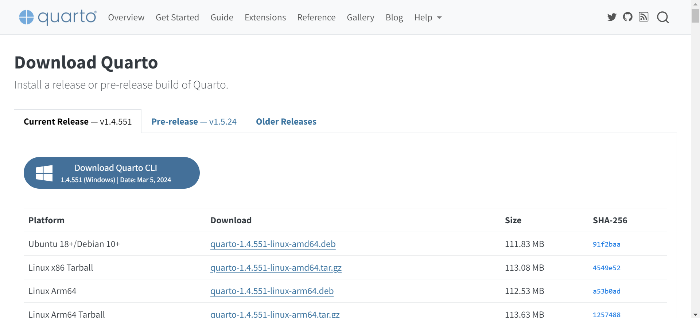
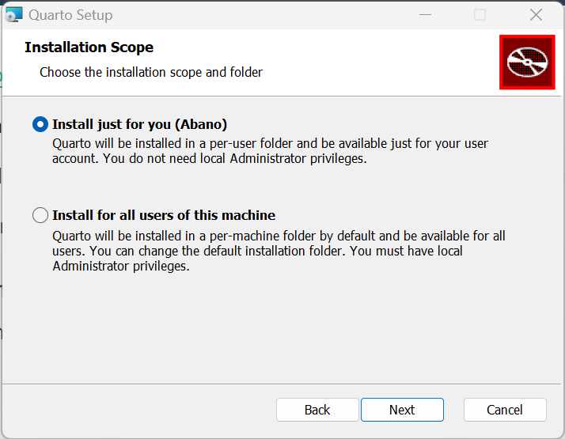
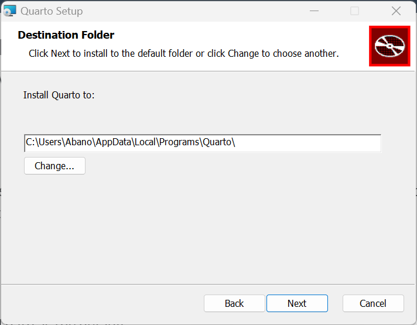
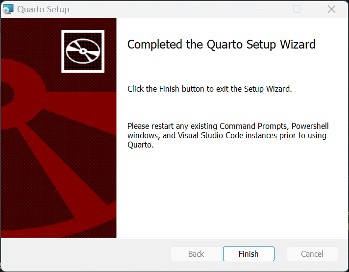
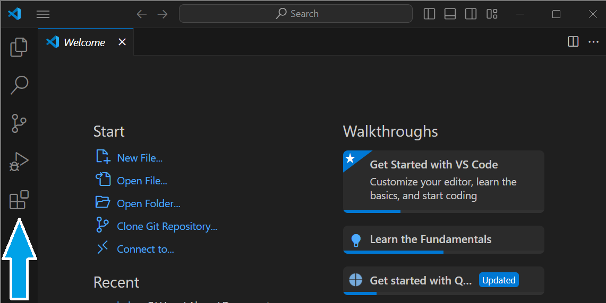
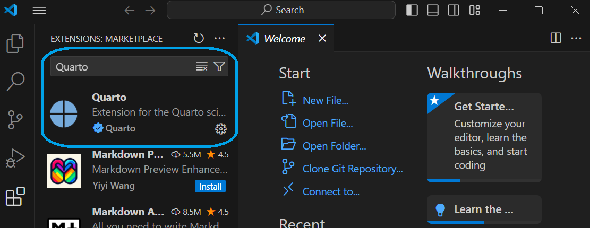

Lesson 2: Installing Quarto
Overview
This lesson will briefly explain Quarto and go over the steps necessary to create a install Quarto in Visual Studio Code (VScode)
Learning Objectives
- Students will have a general idea of what quarto is and its uses.
- Students will be able to download quarto.
- Students will be able to install quarto.
- Students will be able to preview quarto documents.
Lesson
A Quarto Overview
Quarto is a dynamic open-source publishing system made to simplify the process of creating easily reproducible reports, articles, research,HTML, and other print and non-print documents. It is built on top of the exceptionally powerful Pandoc converter and uses a language syntax very similar to R markdown and other flavours of markdown.
Unlike R markdown, Quarto is not tied to a specific language, infact it was made to be multi-lingual. As such, it supports Python, Julia, and Observable among others. The benefits of Quarto can be summarized as:
Dynamic Documents: Like R Markdown, Quarto allows you to create dynamic documents where you can embed code, text, and visualizations.
Multilingual Support: Quarto supports multiple programming languages, making it versatile for different types of analysis. It’s not limited to R; you can use Python, Julia, and more.
Interactive Documents: Quarto supports interactive documents with features like interactive graphics and code blocks. The document output can be PDF, EPUB, HTML, DOC, etcetera.
Reproducibility and Collaboration: Quarto emphasizes reproducibility by capturing the code, data, and dependencies needed to reproduce the document’s content. This makes it a powerful way for people to collaborate on projects as everyone can view everything about a report on a single doument.
Links
Step 01: Find and Download Quarto

Step 02: Install Quarto (For Windows)
- Click on the downloaded msi file. The setup wizard will start.
Click next.
If you want all users on your computer to have access to Quarto select the radio button beside Install for all users of this machine, else, change nothing and just click next.

Click next.
Leave the install path as the default.

Click next.
The installation will start. Wait for it to complete (Please do not turn of your system)
When a message comes up, click on Finish.

Congratulations 🎉😎
You have successfully installed Quarto
Step 3: Enable Quarto Extension in VScode
- Open vscode and click on the Extensions widget on the left panel of vscode.

- Search for Quarto and click on the blue install button.

Step 4: Rendering/Previewing Quarto files
Create a quarto file by clicking the file at the top-left in vscode and then selecting New File.. from the drop-down.
From the new drop-down, select Quarto Document. A new untitled quarto document will be created with the following content:
---
title: "Untitled"
format: html
---- Edit and add content to your quarto file to make it look like this:
---
title: "My First Quarto Code"
format: html
---
### My name is {type your name here}
I just finished installing quarto on **{input the date here}**Click on the preview button on the top-right of vscode. A dialog will pop up.
Name your file test.qmd (qmd is the file extension name for a quarto file) and click on save.
Click the preview button again. A few things will run in the terminal. A preview panel will open on the right of vscode. The result should resemble the picture below (Except the name and date will be different).
Practice Activity
Make a video explaining what you know about quarto and share your video with a classmate.
Download and install Quarto.
Create a new Quarto (.qmd) file and preview it.
Take a screenshot of your screen (with the preview) and share to your group.
Conclusion
You should now have quarto installed and should have created a new quarto document. Quarto is a quick way to create a static webpage without having to understand HTML in detail.
Installing Quarto - Video Walkthrough (For MacOS Users)
Conclusion
You should now have a basic understanding of the capabilities and use cases of Quarto. In future lessons you will utilize markdown to create web content and other documents.
FAQ
I cannot access the quarto download. What do I do?
Use a free VPN on your device and change the location to somewhere in the United States. You can also use the static download availabel at the top of this webpage.